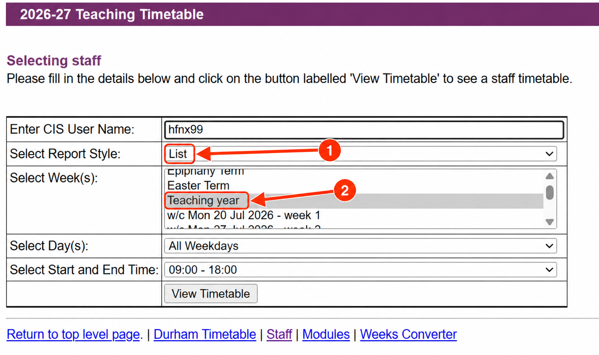

David Chivers
Timetables can change
This calendar is a one-off snapshot. Do not assume it will remain correct for the whole academic year. Teaching dates, times and rooms may change. Keep checking the official Durham timetable , especially before teaching. Outlook entries will not update automatically; amend or remove affected events yourself.
Copy your timetable
Open the Durham staff timetable and enter your own CIS username (your university login code). Set Report Style → List and Week(s) → Teaching year . Choose the days and time range that cover all your teaching, then click View Timetable . Copy the whole report, including the weekday headings.

1: List. 2: Teaching year. Use your own username, not the example shown. Click the image to enlarge.
Ask Copilot
Copy the prompt below and paste it into Microsoft Copilot , signed in with your Durham account. Paste your timetable underneath. Say if you only teach part of a module.
Includes an explicit week-by-week date table and common building names.
View prompt or copy manually
Timetable conversion prompt for 2026–27
Download prompt as text
Open the prompt and copy its text.
Check and download
Check Copilot’s event list against your timetable, especially the academic year, week numbers, dates, times and rooms . Download the calendar file (.ics ) it creates.
Add it to Outlook
In Outlook on the web: Calendar → Add calendar → Upload from file . Choose the .ics file and your calendar, import it, then check the events appear correctly.
Import each calendar file only once to avoid duplicate events.
Exact dates for each timetable week · 2026–27
Use Durham’s timetable week numbers, not term-week or ISO calendar-week numbers. Every date includes its year. Only include weeks listed for your activity.
Durham timetable weeks 1–52 · dates in YYYY-MM-DD format
Week Monday Tuesday Wednesday Thursday Friday Saturday Sunday
1 2026-07-20 2026-07-21 2026-07-22 2026-07-23 2026-07-24 2026-07-25 2026-07-26 2 2026-07-27 2026-07-28 2026-07-29 2026-07-30 2026-07-31 2026-08-01 2026-08-02 3 2026-08-03 2026-08-04 2026-08-05 2026-08-06 2026-08-07 2026-08-08 2026-08-09 4 2026-08-10 2026-08-11 2026-08-12 2026-08-13 2026-08-14 2026-08-15 2026-08-16 5 2026-08-17 2026-08-18 2026-08-19 2026-08-20 2026-08-21 2026-08-22 2026-08-23 6 2026-08-24 2026-08-25 2026-08-26 2026-08-27 2026-08-28 2026-08-29 2026-08-30 7 2026-08-31 2026-09-01 2026-09-02 2026-09-03 2026-09-04 2026-09-05 2026-09-06 8 2026-09-07 2026-09-08 2026-09-09 2026-09-10 2026-09-11 2026-09-12 2026-09-13 9 2026-09-14 2026-09-15 2026-09-16 2026-09-17 2026-09-18 2026-09-19 2026-09-20 10 2026-09-21 2026-09-22 2026-09-23 2026-09-24 2026-09-25 2026-09-26 2026-09-27 11 2026-09-28 2026-09-29 2026-09-30 2026-10-01 2026-10-02 2026-10-03 2026-10-04 12 2026-10-05 2026-10-06 2026-10-07 2026-10-08 2026-10-09 2026-10-10 2026-10-11 13 2026-10-12 2026-10-13 2026-10-14 2026-10-15 2026-10-16 2026-10-17 2026-10-18 14 2026-10-19 2026-10-20 2026-10-21 2026-10-22 2026-10-23 2026-10-24 2026-10-25 15 2026-10-26 2026-10-27 2026-10-28 2026-10-29 2026-10-30 2026-10-31 2026-11-01 16 2026-11-02 2026-11-03 2026-11-04 2026-11-05 2026-11-06 2026-11-07 2026-11-08 17 2026-11-09 2026-11-10 2026-11-11 2026-11-12 2026-11-13 2026-11-14 2026-11-15 18 2026-11-16 2026-11-17 2026-11-18 2026-11-19 2026-11-20 2026-11-21 2026-11-22 19 2026-11-23 2026-11-24 2026-11-25 2026-11-26 2026-11-27 2026-11-28 2026-11-29 20 2026-11-30 2026-12-01 2026-12-02 2026-12-03 2026-12-04 2026-12-05 2026-12-06 21 2026-12-07 2026-12-08 2026-12-09 2026-12-10 2026-12-11 2026-12-12 2026-12-13 22 2026-12-14 2026-12-15 2026-12-16 2026-12-17 2026-12-18 2026-12-19 2026-12-20 23 2026-12-21 2026-12-22 2026-12-23 2026-12-24 2026-12-25 2026-12-26 2026-12-27 24 2026-12-28 2026-12-29 2026-12-30 2026-12-31 2027-01-01 2027-01-02 2027-01-03 25 2027-01-04 2027-01-05 2027-01-06 2027-01-07 2027-01-08 2027-01-09 2027-01-10 26 2027-01-11 2027-01-12 2027-01-13 2027-01-14 2027-01-15 2027-01-16 2027-01-17 27 2027-01-18 2027-01-19 2027-01-20 2027-01-21 2027-01-22 2027-01-23 2027-01-24 28 2027-01-25 2027-01-26 2027-01-27 2027-01-28 2027-01-29 2027-01-30 2027-01-31 29 2027-02-01 2027-02-02 2027-02-03 2027-02-04 2027-02-05 2027-02-06 2027-02-07 30 2027-02-08 2027-02-09 2027-02-10 2027-02-11 2027-02-12 2027-02-13 2027-02-14 31 2027-02-15 2027-02-16 2027-02-17 2027-02-18 2027-02-19 2027-02-20 2027-02-21 32 2027-02-22 2027-02-23 2027-02-24 2027-02-25 2027-02-26 2027-02-27 2027-02-28 33 2027-03-01 2027-03-02 2027-03-03 2027-03-04 2027-03-05 2027-03-06 2027-03-07 34 2027-03-08 2027-03-09 2027-03-10 2027-03-11 2027-03-12 2027-03-13 2027-03-14 35 2027-03-15 2027-03-16 2027-03-17 2027-03-18 2027-03-19 2027-03-20 2027-03-21 36 2027-03-22 2027-03-23 2027-03-24 2027-03-25 2027-03-26 2027-03-27 2027-03-28 37 2027-03-29 2027-03-30 2027-03-31 2027-04-01 2027-04-02 2027-04-03 2027-04-04 38 2027-04-05 2027-04-06 2027-04-07 2027-04-08 2027-04-09 2027-04-10 2027-04-11 39 2027-04-12 2027-04-13 2027-04-14 2027-04-15 2027-04-16 2027-04-17 2027-04-18 40 2027-04-19 2027-04-20 2027-04-21 2027-04-22 2027-04-23 2027-04-24 2027-04-25 41 2027-04-26 2027-04-27 2027-04-28 2027-04-29 2027-04-30 2027-05-01 2027-05-02 42 2027-05-03 2027-05-04 2027-05-05 2027-05-06 2027-05-07 2027-05-08 2027-05-09 43 2027-05-10 2027-05-11 2027-05-12 2027-05-13 2027-05-14 2027-05-15 2027-05-16 44 2027-05-17 2027-05-18 2027-05-19 2027-05-20 2027-05-21 2027-05-22 2027-05-23 45 2027-05-24 2027-05-25 2027-05-26 2027-05-27 2027-05-28 2027-05-29 2027-05-30 46 2027-05-31 2027-06-01 2027-06-02 2027-06-03 2027-06-04 2027-06-05 2027-06-06 47 2027-06-07 2027-06-08 2027-06-09 2027-06-10 2027-06-11 2027-06-12 2027-06-13 48 2027-06-14 2027-06-15 2027-06-16 2027-06-17 2027-06-18 2027-06-19 2027-06-20 49 2027-06-21 2027-06-22 2027-06-23 2027-06-24 2027-06-25 2027-06-26 2027-06-27 50 2027-06-28 2027-06-29 2027-06-30 2027-07-01 2027-07-02 2027-07-03 2027-07-04 51 2027-07-05 2027-07-06 2027-07-07 2027-07-08 2027-07-09 2027-07-10 2027-07-11 52 2027-07-12 2027-07-13 2027-07-14 2027-07-15 2027-07-16 2027-07-17 2027-07-18
The table is calculated from a saved Durham report identifying week 13 as 12–18 October 2026, using continuous seven-day weeks. It is not a live copy of the converter. Check it against Durham’s week converter if your report’s year or dates differ.
Room names
The prompt expands common building codes and keeps the original room number. Unknown codes are flagged for checking. Reference: Durham building names .